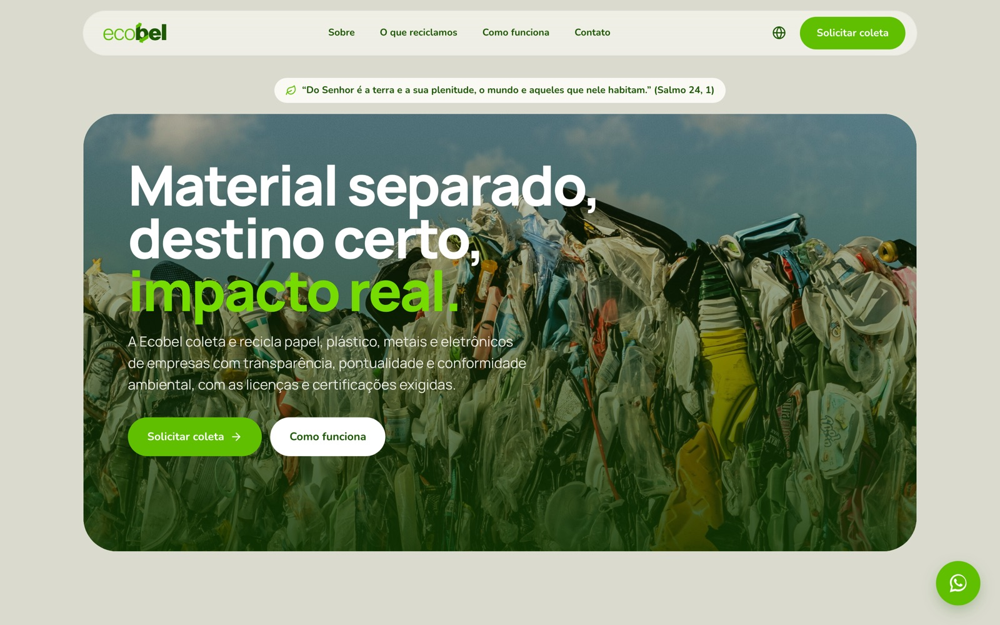

Igor Dalmolin.
Art direction.
Tech fluency.
Direção de arte.
Fluência em tecnologia.
Art Director and Senior Visual Designer with 7+ years in campaigns, brand, motion, and digital design. I lead a team of 10 designers and know UX and front-end well enough to take an idea from concept to code. Diretor de Arte e Visual Designer Sênior com 7+ anos em campanhas, marca, motion e design digital. Lidero um time de 10 designers e entendo de UX e front-end o bastante pra levar uma ideia do conceito ao código.
Four projects, four kinds of results.Quatro projetos, diversos resultados.
Public Service, Internet LanguageServiço público, linguagem de internet
Public communication for Santa Maria City Hall, made with the Agência CENTRO team: a stiff government account rebuilt into a feed people from all over Brazil follow by choice. Comunicação pública da Prefeitura de Santa Maria, feita com o time da Agência CENTRO: uma conta institucional engessada refeita em um perfil que gente do Brasil inteiro segue porque quer.

Ecobel: Recycling Without the ClichéEcobel: Reciclagem sem clichê
A B2B recycling company that needed to look as serious as it works. I redesigned the brand and designed the website, now live as its main sales channel. Uma empresa de reciclagem B2B que precisava parecer tão séria quanto trabalha. Redesenhei a marca e projetei o site, que hoje está no ar como principal canal de vendas.
WhichGameToBuy: From Thesis to ProductWhichGameToBuy: Da Tese ao Produto
Born as my PUCRS thesis on game discovery (10/10), tested with 18 users, then shipped by me as an independent product: chat discovery with recommendations that explain themselves, live at whichgametobuy.com. Nasceu como minha tese na PUCRS sobre descoberta de jogos (nota 10), foi testado com 18 usuários e virou produto independente lançado por mim: descoberta por chat com recomendações que se explicam, no ar em whichgametobuy.com.
The Portfolio Is the ProductO portfólio é o produto
The site you're on, designed and coded by me, then measured with Microsoft Clarity and a usability test, and adjusted based on what visitors did. O site em que você está, desenhado e codificado por mim, medido com Microsoft Clarity e teste de usabilidade, e ajustado a partir do que os visitantes fizeram.
EducationFormação acadêmica
ExperienceExperiência
Skills & honorsHabilidades & reconhecimentos
- Prêmio Boas Práticas da Gestão Pública Municipal FAMURS
- Prêmio ARI de Assessoria de Imprensa ARI
- 3ª Maratona de Defesa dos Direitos dos Usuários de Serviços Públicos CGU
- Troféu Vento Norte Santa Maria Vídeo e Cinema
Who is Igor Dalmolin?Quem é Igor Dalmolin?
Art Director and Senior Visual Designer from southern Brazil. Over 7 years across campaigns, visual identity, social media, and motion, always with one foot in the creative and the other in tech.
Diretor de Arte e Visual Designer Sênior do sul do Brasil. Mais de 7 anos entre campanhas, identidade visual, social media e motion, sempre com um pé no criativo e outro na tecnologia.
I started as a Graphic Designer and Production Assistant while still in college. Then COVID scrambled everything, and adapting fast turned out to be the part of the job I was best at.
Comecei como Designer Gráfico e Assistente de Produção ainda na faculdade. Aí a Covid bagunçou tudo, e me adaptar rápido acabou sendo a parte do trabalho que eu fazia melhor.
I joined Agência CENTRO as a graphic designer in 2021 and became Art Director in 2023. Today I lead a team of 10 designers and the design systems of six public organizations, and the work has picked up a few industry awards along the way.
Entrei na Agência CENTRO como designer gráfico em 2021 e virei Diretor de Arte em 2023. Hoje lidero um time de 10 designers e os design systems de seis organizações públicas, e o trabalho somou alguns prêmios do setor pelo caminho.
UX is my complement: a postgraduate degree at PUCRS (10/10) and enough front-end to build what I design (this site included). It makes me an art director who also thinks about how a piece gets used, and who gets along easily with the dev team.
UX é o meu complemento: pós-graduação na PUCRS (nota 10) e front-end suficiente pra construir o que eu desenho (incluindo este site). Isso me faz um diretor de arte que também pensa em como a peça vai ser usada, e que conversa fácil com o time de desenvolvimento.
Craft gets you halfway. What I add is direction: knowing what to make, why it matters, and how to communicate it clearly, with or without AI in the room.
O ofício leva até a metade do caminho. O que eu somo é direção: saber o que fazer, por que importa e como comunicar com clareza, com ou sem IA na sala.
In my free time I play guitar, look after my cats, listen to a lot of emo (shout-out to Fresno, the Brazilian band), and love being a home barista (okay, I'm exaggerating: I'm nowhere near a real barista).
No tempo livre, eu toco guitarra, cuido dos meus gatos, ouço muito emo (um salve pra Fresno!) e amo ser barista caseiro (tá, tô exagerando: não chego aos pés de um barista de verdade).
Just the work. No reading required.Só o trabalho. Sem textão.
Social media for Santa Maria City Hall, created at Agência CENTRO. Click any piece to see it full size.Social media da Prefeitura de Santa Maria, criada na Agência CENTRO. Clica em qualquer peça pra ver em tamanho grande.
Next project?
I'm in.Próximo projeto?
Tô dentro.
Full-time, part-time, or freelance, remote included. Write me and I'll answer fast.Full-time, part-time ou freelance, remoto também. Me escreve que eu respondo rápido.